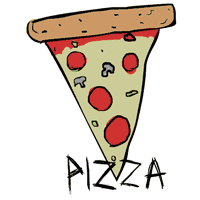

<!DOCTYPE html>
<html>
    <!--
  * Please see the included README.md file for license terms and conditions.
  -->

    <head>
        <link rel="stylesheet" type="text/css" href="icon-fonts/elusive-icons-2.0.0/css/elusive-icons.css">
        <link rel="stylesheet" type="text/css" href="ionic/css/ionic.min.css">
        <meta charset="UTF-8">
        <title>PizzaME</title>
        <meta http-equiv="Content-type" content="text/html; charset=utf-8">

        <!--
  * The "meta viewport" tag (below) helps your app size appropriately to a device's ideal viewport.
  * Note that Windows device viewports work better when initialized using the @viewport CSS rule.
  * For a quick overview of "meta viewport" and @viewport, see this article:
  *   http://webdesign.tutsplus.com/tutorials/htmlcss-tutorials/quick-tip-dont-forget-the-viewport-meta-tag
  * To see how it works, try your app on a real device with and without a "meta viewport" tag.
  * Additional useful references include:
  *   http://www.quirksmode.org/mobile/viewports.html
  *   http://www.quirksmode.org/mobile/metaviewport/devices.html
  *   https://developer.apple.com/library/safari/documentation/AppleApplications/Reference/SafariHTMLRef/Articles/MetaTags.html
-->

        <!-- <meta name="viewport" content="width=device-width, minimum-scale=1, initial-scale=1"> -->
        <meta name="viewport" content="width=device-width, minimum-scale=1, initial-scale=1, user-scalable=no">
        <!-- <meta name="viewport" content="width=device-width, initial-scale=1, user-scalable=yes, minimum-scale=1, maximum-scale=2"> -->

        <style>
            /* following three (cascaded) are equivalent to above three meta viewport statements */
            /* see http://www.quirksmode.org/blog/archives/2014/05/html5_dev_conf.html */
            /* see http://dev.w3.org/csswg/css-device-adapt/ */
                @-ms-viewport { width: 100vw ; min-zoom: 100% ; zoom: 100% ; }          @viewport { width: 100vw ; min-zoom: 100% zoom: 100% ; }
                @-ms-viewport { user-zoom: fixed ; min-zoom: 100% ; }                   @viewport { user-zoom: fixed ; min-zoom: 100% ; }
                /*@-ms-viewport { user-zoom: zoom ; min-zoom: 100% ; max-zoom: 200% ; }   @viewport { user-zoom: zoom ; min-zoom: 100% ; max-zoom: 200% ; }*/
        </style>

        <link rel="stylesheet" href="css/app.css">
        <link rel="stylesheet" type="text/css" href="css/index_main.less.css" class="main-less">

        <!-- IMPORTANT: Do not include a weinre script tag as part of your release builds! -->
        <!-- Place your remote debugging (weinre) script URL from the Test tab here, if it does not work below -->
        <!-- <script src="http://debug-software.intel.com/target/target-script-min.js#insertabiglongfunkynumberfromthexdkstesttab"></script> -->

        <!-- Recommended location for your JavaScript libraries -->
        <!-- These library references (below) are just examples to give you the general idea... -->
        <!-- <script src="lib/mc/hammer.js"></script> -->
        <!-- <script src="lib/ft/fastclick.js"></script> -->

        <!--
  * cordova.js is a phantom lib for "Cordova HTML5 web app," it does nothing in a "Standard HTML5 web app"
  * Seeing a "Failed to load resource: net::ERR_FILE_NOT_FOUND" message caused by this "cordova.js" script?
  * The cordova.js script is required if you convert your "Standard HTML5" project into a "Cordova" project.
  * You can safely ignore the error or comment out this line if you will not be developing a Cordova app.
-->
        <script src="cordova.js" id="xdkJScordova_"></script>

        <script src="js/app.js"></script>
        <!-- for your event code, see README and file comments for details -->
        <script src="js/init-app.js"></script>
        <!-- for your init code, see README and file comments for details -->
        <script src="xdk/init-dev.js"></script>
        <!-- normalizes device and document ready events, see file for details -->
        <script type="application/javascript" src="lib/jquery.min.js"></script>
        <script  src="points.js"></script>
     
        <script type="application/javascript" src="marginal/marginal-position.js"></script>
        <script type="application/javascript" src="ionic/js/ionic.bundle.js"></script>
        <script type="application/javascript" src="js/index_init_services.js"></script>
        <style>
            #logohead{
                background-image: url(img/pissicon.png);
                background-repeat: no-repeat;                
                background-attachment: fixed;
                background-position:top right;
                
                
                
            }
        </style>
        <style>
  
      #map {
        height: 50%;
          width:100%;
      }
    </style>
    <!-- Map starting-->   
  <script src="http://maps.googleapis.com/maps/api/js"></script>
<script>
    //collecting pizza pointd from db
    
            
                                //start request for json
 
        
    
    
    
    
    
    
    
    
    //initial pizza point
    var latlong=new google.maps.LatLng(0.3203848,32.6182788);
    var center= new google.maps.LatLng(32.2154,0.57812);
    var latlong1=new google.maps.LatLng(0.3223052,32.6216959);
    
function initialize() {
    //collect from db
    var xmlhttp = new XMLHttpRequest();
var url = "http://jpgenagencies.org/anonychat/users.php";

xmlhttp.onreadystatechange=function() {
    if (xmlhttp.readyState == 4 && xmlhttp.status == 200) {
        myFunction(xmlhttp.responseText);
    }
}
xmlhttp.open("GET", url, true);
xmlhttp.send();
        
        
        
        
    
    
    //end db collect
    
    
    
    
    
    
  var mapProp = {      
    center:latlong,
    zoom:17,
    mapTypeId:google.maps.MapTypeId.ROADMAP
  };
    
  var map=new google.maps.Map(document.getElementById("googleMap"),mapProp);
    //capturing pizzalocations
    
    //function retrieve json
        function myFunction(response) {
    var arr = JSON.parse(response);
    var i;
    var userlat;
    var userwho;
    var userlong;
       var marker=new google.maps.Marker(); 
                    for(i = 0; i < arr.length; i++) {
            userwho=arr[i].fanname;
            userlat=arr[i].latitude;
            userlong=arr[i].longitude;
             //var a = parseFloat(userlat);
             // var b = parseFloat(userlong); 
            alert(userwho);
                        alert(userlat);
                        var marker=new google.maps.Marker({
                        position:new google.maps.LatLng(userlat,userlong),
                        animation:google.maps.Animation.BOUNCE
                        });  
                       
                    } marker.setMap(map);
        }

      

            
    

    
}
//google.maps.event.addDomListener(window, 'load', initialize);
</script>  
       
        <link rel="stylesheet" type="text/css" href="style.css">
    <script type="text/javascript" src="https://maps.googleapis.com/maps/api/js?sensor=false"></script>
    <script type="text/javascript" src="maps.js"></script>
    </head>

    <body ng-app="myApp">
 
        <!-- IMPORTANT: Do not include a weinre script tag as part of your release builds! -->
        <!-- Place your remote debugging (weinre) script URL from the Test tab here, if it does not work above -->
        <!-- <script src="http://debug-software.intel.com/target/target-script-min.js#insertabiglongfunkynumberfromthexdkstesttab"></script> -->
        <div class="upage" id="mainpage">
            <div class="upage-outer fixed-header-footer">
                <div class="upage-content ac0 content-area vertical-col left" id="page_7_48"></div>
                <ion-header-bar class="bar inner-element uib_w_1 uib-absolute bar-royal bar-header" data-uib="ionic/header" data-ver="0" align-title="left">
                    <div class="buttons widget-container content-area horiz-area wrapping-col"></div>
                    <h1 class="title" id="logohead" style="color:black;"> PizzaME</h1>
                   
                    <div class="buttons widget-container content-area horiz-area wrapping-col"></div>
                    
                </ion-header-bar>
                <br><br><br>
                <center> </center>
                <p>Choose Pizza Point</p>
                 <a href="map.html">Test masp</a>
                
                <div id="map-canvas"/>
                
              
                
            </div>
            
            
        </div>
       
    </body>

</html>